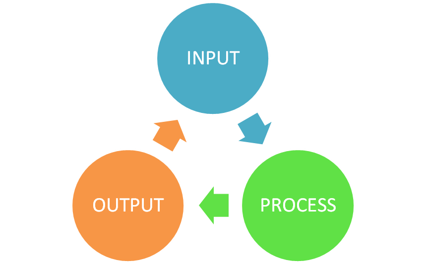

Când auzim cuvântul algoritm, numerele și calculele sunt primele lucruri care ne vin în minte, nu? Defapt, un algoritm este o soluție pas-cu-pas la un tip general de probleme. A rezolva o problemă inseamnă a obține, pentru anumite date de intrare (input), rezultatul problemei (date de ieșire sau output).
Cel mai usor mod de a ințelege conceptul de algoritm, este prin asocierea acestuia cu o rețetă culinară, ingredientele sunt datele de intrare (input), modul de preparare este algoritmul iar preparatul final reprezintă datele de ieșire (output).
Studiul informaticii oferă instrumentele pentru a aplica gândirea algoritmică la problemele din lumea reală și pentru a finaliza rapid sarcinile, astfel optimizând procesele care altfel ar fi fost o povară de abordat.